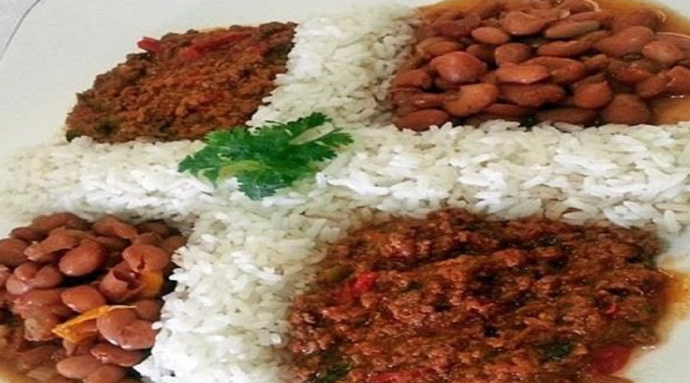

-
La Bandera Dominicana

-
Los Tres Golpes / Mangu

-
Mofongo

All or nearly all food groups are accommodated in typical Dominican cuisine, as it incorporates meat or seafood; grains, especially rice, corn (native to the island), and wheat; vegetables, such as beans and other legumes, potatoes, yuca, or plantains, and salad; dairy products, especially milk and cheese; and fruits.